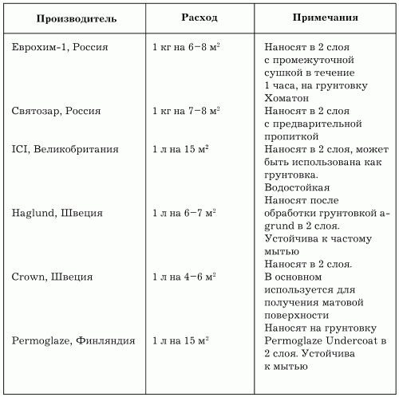
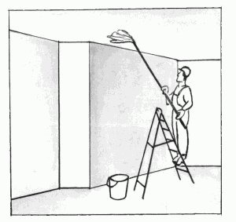

Подготовка материалов.

Густотертые краски и некоторые краски, готовые к применению, в ряде случаев необходимо предварительно подготовить. В этом деле имеются свои особенности, о которых будет рассказано ниже.
В состав густотертых красок входят следующие компоненты:
– пигменты;
– наполнители;
– олифа;
– сиккатив.
Такие краски представляют собой густую, достаточно плотной консистенции массу и способны сохранять свои рабочие свойства очень долгое время.
В зависимости от требований к выполняемым работам густотертые краски в различных соотношениях разводят олифой. При разведении их рассчитанное количество олифы нужно вводить в состав постепенно, иначе будет затруднен процесс перемешивания краски до рабочей консистенции.
После того как краска будет готова, в нее следует ввести 2–4 % сиккатива.
Сиккатив – это химическое вещество, которое в малых количествах добавляется в краску с целью ее скорейшего высыхания. Излишек сиккатива может привести к тому, что красочный слой либо не высохнет вообще, либо покрытие начнет стареть во много раз быстрее.
Готовые к применению краски и эмали разводить чаще всего не нужно. Но при длительном хранении многие из них начинают расслаиваться: пигменты и наполнители образуют на дне банки плотный осадок, а сверху появляется сухая пленка.
В этом случае нужно удалить пленку. Для этого с помощью ножа пленку аккуратно подрезают по всему периметру банки и удаляют вместе с образовавшимся под ней желеобразным слоем краски. Далее следует растворить осадок, образовавшийся на дне, и перемешать его. Сделать это будет легче, если чистую краску предварительно перелить в другую банку. Перемешивание проводят любыми подручными средствами: деревянной или металлической палочкой, отверткой, стамеской и даже ложкой. После того как осадок полностью растворится в остатке краски, в 2–3 приема вливают остальное ее количество.
Процесс высыхания краски фактически можно назвать пленкообразованием, ведь именно за счет формирования пленки краска превращается в однородное и относительно стойкое покрытие.
Краски различных марок образуют после высыхания разнообразные по твердости и упругости покрытия. Одни краски снимаются с поверхности подобно резиновым пленкам, а другие просто-напросто осыпаются – такое несходство в свойствах красок обусловлено именно различными типами пленкообразующих компонентов.
Натуральным пленкообразователем является олифа. Это вещество получают из различных растительных масел, подвергшихся окислению и длительному нагреву. В олифы натуральных видов добавляют сиккативы, так как без них высыхание этих составов невозможно. Каждая олифа высыхает на воздухе с образованием мягкой эластичной пленки.
Стойкость олиф невысока, но свойства промежуточной адгезии выражены в полной мере – олифа хорошо ложится практически на любую поверхность. Все виды натуральных олиф не содержат в своем составе органических растворителей – это еще одна причина низкой скорости их высыхания.
В качестве дешевого полуфабриката для производства масляных красок используют комбинированные олифы. В своем составе они содержат от 30 до 45 % растворителя.
Комбинирование олиф производят для получения составов с заранее заданными свойствами. Это олифы для наружных работ, приготовления красок и т. д. В них применяют сочетание различных природных масел, что и придает таким олифам те или иные свойства.
Канифоль или каучуковые добавки придают олифе упругость и химическую стойкость – именно этими качествами отличаются композиционные виды олиф.
В зависимости от типа пленкообразователя краски классифицируются и обозначаются соответствующим буквенным индексом. На основе поликонденсационных смол:
АУ – алкидные;
ГФ – глифталевые;
КО – кремнийорганические;
МЛ – меламиновые;
ПФ – пентафталевые;
УР – полиуретановые.
На полиэфирной основе:
ЦГ – циклогексановые;
ЭП – эпоксидные;
ФЛ – фенольные;
КЧ – каучуковые;
ХВ – перхлорвиниловые;
АК – полиакрилатные (акриловые);
ВА – поливинилацетатные.
На основе природных смол:
БТ – битумные;
КФ – канифольные;
МА – масляные;
ШЛ – шеллачные.
На основе целлюлозных эфиров:
НЦ – нитратцеллюлозные (нитрокраски);
АЦ – ацетилцеллюлозные.
Готовые составы для окрашивания потолковВ целях экономии времени и для получения превосходного результата вы можете воспользоваться готовыми составами российского и зарубежного производства.
Наиболее популярные окрасочные составы для удобства пользования сведены в табл. 1.
Таблица 1. Готовые составы для окрашивания потолков
Для того чтобы работа с кистью и краской была результативной, потребуется владение определенными навыками. Перед тем как взять в руки кисть или краскораспылитель, необходимо произвести подготовку поверхности.
Перечень работ включает в себя:
– предварительную очистку;
– восстановление рельефа поверхности;
– шпатлевку;
– шлифовку;
– грунтовку.
Рассмотрим подробно каждый вид подготовительной деятельности.
Очистку поверхности производят при помощи лещади – терки из бетона или кирпича, которая легко снимает старую штукатурку. Ею весьма удобно работать, но этот инструмент имеет один существенный недостаток – быстро забиваются поры и рабочая поверхность приходит в негодность. Лещадь просто изготовить из любого кирпича.
Во многих других случаях для обработки потолков применяют наждачную шкурку или пемзу, которая более предпочтительна из-за своей высокой износостойкости.
Обязательно следует размыть старое покрытие – побелку – водой с мылом, раствором аммиака или 3 %-ным раствором соды, после чего промыть потолок чистой водой (рис. 7).

Рис. 7. Размывка потолка.
Старую водоэмульсионную краску счистить очень тяжело. Предлагаем следующий способ: через мокрую тряпку проглаживают горячим утюгом покрытые краской участки. Также можно счистить краску по старинке: размешать до образования пасты асбестовую пыль, каустическую соду, просеянный мел. Эту пасту намазывают на потолок и через 30 минут счищают шпателем вместе с краской.
В новых домах потолок представляет собой бетонную поверхность, которую перед покраской нужно обязательно грунтовать и шпаклевать.
Перед тем как приступать к покраске, необходимо соблюдать несколько правил.
Правило первое: для того чтобы качественно окрасить поверхность, ее необходимо зачистить и прогрунтовать. Стойкость будущего красочного слоя во многом зависит от грунтовки и состояния окрашиваемой поверхности.
Правило второе: оштукатуренные поверхности следует грунтовать с особой тщательностью, так как слой штукатурки обладает сильной втягивающей способностью.
Перед началом грунтования нужно дать свежей штукатурке окончательно просохнуть в течение примерно 2 недель. Для того чтобы определить, готова ли поверхность к окрашиванию, лучше всего воспользоваться фенолфталеиновой пробой: нанести на поверхность несколько капель индикатора фенолфталеина и проследить за его цветом – появление розового свидетельствует о том, что штукатурка еще не готова к нанесению грунтовки.
Правило третье: грунтовать следует только однородную матовую поверхность. Это качество ей придает ровный слой нанесенной шпатлевки, отшлифованный двумя видами шкурок: грубой и тонкой.
Правило четвертое: если поверхность ранее была уже окрашена и слой краски продолжает оставаться ровным и твердым, то снимать его не требуется, грунтовку наносят прямо на него.
Правило пятое: нельзя применять для ускорения высыхания красочного слоя обогреватели, краска должна сохнуть в естественных условиях при комнатной температуре. Нагревание приведет к тому, что красочное покрытие сморщится или вздуется пузырями, так как высыхание его будет происходить неравномерно.
Правило шестое: просохшим считается только тот красочный слой, на котором не остается следа от сильного надавливания пальцем.
Перед началом окраски прежде всего следует тщательно подготовить поверхность. Для заполнения трещин, раковин или других неровностей используют различные виды шпатлевок.
Шпатлевка является инертным составом, который готовят на основе мела или каолина.
В качестве первоначальных грунтовок чаще всего используют сильно разведенную краску, которой затем будут окончательно окрашивать поверхность.
С самого начала оштукатуренные поверхности необходимо очистить от пыли и грязи. Эту незамысловатую операцию выполнять следует щетками и влажными тряпками. В результате чрезмерного старания можно размыть и саму штукатурку. Нередко на таких поверхностях образуются и потом выступают ржавые, масляные либо смолистые пятна, возникшие по причине некачественной обработки древесины, а точнее, неудаления засмолов.
В первом случае поступают так: ржавые места на потолке покрывают известковым составом на молоке или закрашивают пораженный участок белилами, а затем грунтуют и штукатурят. Во втором случае места штукатурки, где выступила смола, заклеивают тонкими листами фольги, после чего эти места необходимо зашпатлевать. Трещины на оштукатуренной поверхности заделывают замазкой, перед нанесением которой требуется предварительно провести расшивку – расширение незначительных трещин ножом для того, чтобы в них было удобнее вносить замазку. Требуемая глубина расшивки щелей – 2 мм.
Ранее окрашенные поверхности в каждом конкретном случае имеют свои особенности.
Если поверхность прежде была покрыта мелом, его нужно обязательно удалить, поскольку на меловую поверхность краску наносить не рекомендуется. Причина, наверное, понятна всем: на такой поверхности не сможет удержаться ни один красящий состав.
Удаление мела производят с помощью скребка. Когда основная часть мелового покрытия будет снята, завершить очистку можно тряпкой, смоченной в теплой мыльной воде, после чего поверхность необходимо высушить.
Удаление набела (потрескавшегося и легко отстающего слоя старой краски) производят с помощью щетки, шкурки и скребка, а от остатков его довольно просто избавиться, вооружившись химическими препаратами – соляной кислотой или раствором аммиака.
Однако работу в этих случаях нужно обязательно вести в резиновых перчатках и со строжайшим соблюдением всех мер безопасности, а по окончании ее тщательно промыть поверхность водой. В качестве средства для полной очистки поверхности от прочно держащегося слоя краски рекомендуется использовать составы промышленного производства, например средство БЭМ-2.
В домашних условиях также доступно приготовление неплохих по качеству очищающих паст, рецепты которых приводятся ниже.
Рецепт 1.
2 части нашатырного спирта смешивают с 1 частью скипидара. К полученному составу добавляют мел до достижения необходимой вязкости.
Рецепт 2.
Гашеную известь в количестве 3 частей смешивают с 1 частью кальцинированной соды и 5 частями воды. Очищенную от старого красочного покрытия поверхность с помощью щелочных растворов требуется нейтрализовать раствором кислоты (уксусной или соляной), а после этого промыть водой.
Обработку поверхностей можно условно разделить на подготовку под водные и неводные окраски. Поверхности, которые подлежат окраске, должны отвечать следующим требованиям:
– оштукатуренные поверхности обязательно следует просушить (приблизительная влажность – не более 8 %, что можно определить с помощью фенолфталеиновой пробы);
– на оштукатуренных площадях не должно быть вздутий и трещин, щелей в местах соединения поверхностей.
Довольно часто потолок требует выравнивания. Для частичного выравнивания поверхности вам потребуется шпатель шириной 60 см и готовые смеси на гипсовой или цементной основе.
Штукатурные смеси на гипсовой основе: «Волма-слой», «Ротбанд», «Ветонит-ГБ».
Штукатурная смесь на цементной основе: «Ветонит-ТТ».
Для окончательного выравнивания потолков в сухих помещениях применяют шпатлевку «Форвард КР+». Использование данной шпатлевки удобно тем, что после нее не требуется побелка или покраска.
Эта шпатлевка представляет собой белый порошок, состоящий из фракционированного белого минерального наполнителя и высококачественных полимерных добавок. При смешивании с водой порошок образует легко обрабатываемую растворную смесь. Правильно приготовленный раствор не стекает с потолка, легко отстает от металлического шпателя и после высыхания становится довольно прочным.
Данную шпатлевку можно использовать на окрашенных или оклеенных обоями поверхностях.
Приготовление раствора: порошок добавляют в воду, перемешивают в течение 2 минут до получения однородной массы. Для этой цели можно воспользоваться электродрелью со специальной насадкой. Дают постоять приготовленной смеси в течение 10 минут, после чего перемешивают. Готовый раствор следует использовать в течение 24 часов.
С помощью стального шпателя или стальной линейки наносят шпатлевку на поверхность потолка. Шпатель рекомендуется применять при частичном выравнивании, линейку – при полном. Мазки следует наносить перпендикулярно друг к другу. Удалив излишки шпатлевки со шпателя, используют их снова.
Довольно часто выравнивание потолка проводят в несколько слоев. В этом случае перед нанесением очередного слоя нужно убедиться в том, что предыдущий высох. Время высыхания в основном зависит от толщины слоя и температуры воздуха: при 10 °C высыхание происходит за 2 дня, при 20 °C – за 1 день.
Шпателями выравнивать потолок намного легче, но дольше.
Подготовка поверхностей под окрашивание водорастворимыми красками включает в себя следующие операции:
– очистка;
– расшивка трещин;
– частичная подмазка;
– шлифование подмазанных мест;
– первая сплошная шпатлевка;
– первая грунтовка;
– грунтовка с подцветкой.
Потолок промывают водой до полного удаления старой побелки, удобнее всего использовать для этого маховую кисть.
Отслоившуюся краску соскребают при помощи скребков или металлических шпателей, удаляют пыль пылесосом. Мелкие трещины следует расшить шпателем, заполнить штукатуркой и отшлифовать. Поверхности, которые необходимо выровнять шпатлевкой, сначала грунтуют для того, чтобы связующий компонент не ушел в толщу основания и слой шпатлевки не потерял своей прочности.